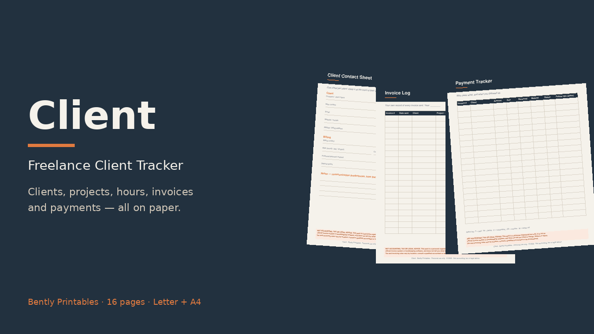

16 printable pages, Letter + A4
- Client directory · client contact sheet · project brief · project pipeline
- Time log · weekly hours summary
- Invoice log · payment tracker with follow-ups · job expense log
- Monthly income snapshot
- 3 blank masters
Start free
Download the invoice log page, then grab the full pack.
Personal organizing tool only. Not accounting, tax or legal advice, and not an official invoicing or bookkeeping system. Consult a qualified accountant or tax professional for your situation.